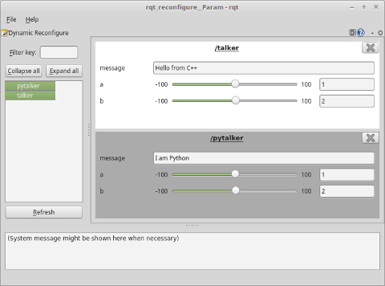
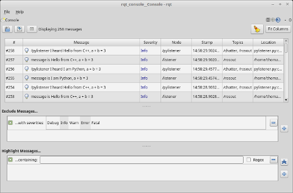

Node Example
ROS allows for creating nodes that communicate with each other. It is very common to use C++ and Python to write these nodes.
This package contains example nodes written in C++ and Python that show minimal examples of using some very basic but powerful features of ROS. Those features include:
- parameter server
- dynamic reconfigure
- timers
- custom messages
- classes with callback functions for publishers and subscribers
- remap topic names
There are several launch files included, the main one being node_example.launch. This will start
a talker and listener written in C++ and a talker and listener written in Python. One GUI will open
allowing you to see what messages are being recieved by the listeners and another GUI will allow
you to change the values sent from each talker. Both listener nodes receive messages from both
talkers, showing that the languages used to write the talkers and listeners can be mixed.
The master branch will try to keep up with the latest long-term support release version of ROS (currently Kinetic).
The hydro-dev branch was tested on ROS Hydro, Indigo, and Kinetic.
The fuerte-dev branch was tested on ROS Fuerte.
Usage
Run
roslaunch node_example node_example.launch
to start all nodes. You should see two windows open: rqt_reconfigure and rqt_console. They will look like
 